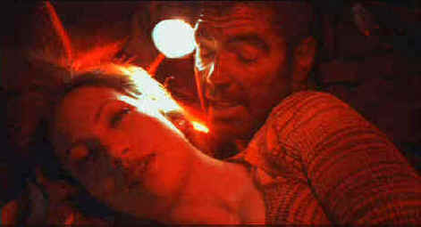

Universal/1990/145m/WS 1.85
This is a delicious set-up. During a prison escape, a U.S. Marshal on the scene is kidnapped. Dumped in her car trunk together with the escapee Jack Foley, the close proximity leads to sexual sparks. Good thing the Marshal is a lady. Elmore Leonard was inspired to write Out of Sight when he chanced on a news photo of a beautiful lady Federal Marshal posing with her shotgun. Tough and sexy Karen Sisco is the result. The pursuit of Foley and the seduction of Sisco ride the same road climaxing in a head on collision at opposite ends of a staircase. The stairs may symbolize the unbreachible gap between these characters from opposite end of the legal spectrum, but before the finale filmmakers make sure their badge-crossed lovers at least get a taste of what it might be like if things were different.
 |
Lopez and Clooney: close quarters and sexual sparks. ©Universal |
The chemistry
between my lady Jennifer Lopez and George Clooney is amazing. Clooney works the magic as
Foley. He’s tough, charming, smart and thoroughly romantic. Lopez turns up the sexual
barometer every time she’s on the screen. She equally convincing packing a gun and
packed into her designer clothing. Clooney and Lopez make the scene in the car trunk hot
enough to melt the spare tire. The supporting actors work with beautiful ensemble
precision. Albert Brooks disappeared so well into the role of prisoner billionaire Robert
Ripley that I had trouble recognizing him until later in the film. Ving Rhames is a little
less threatening than usual as Foley henchman Buddy. Don Cheadle continues to infuse films
with his unique energy, this time out playing small time con and boxer Snoopy Miller and
Dennis Farina play Marshall Sisco with a wink and flare. There are two nice small roles
filled by Michael Keaton, reprising FBI agent Ray Nicolet and Sam Jackson a prisoner with
a mission to escape.
The cutting of Out of Sight is bold. The story moves
back and forth in a two-year time frame with the same reckless abandon that Jack Foley
pulls off bank jobs. While I usually enjoy stories told chronologically, free form suits Out
of Sight well. By choosing the order of events carefully, the filmmaker’s
maximize emotional involvement. Director Steven Soderbergh consistently makes the right
choices. Terrific casting and a team of talented principal collaborators give Out of
Sight the goods. Screenwriter Scott Frank, who also wrote the terrific screenplay from
Elmore Leonard’s Get Shorty, once again proves the perfect interpreter of
Leonard’s world. Eccentricity and cockeyed charm are hallmarks of this excellent
script. The director and writer appear to be working in perfect sinc. A quirky, pop score
reflects the players very well. The slight wink that accompanies the entire production
plays throught the score as well. Along with confident photography and smart production
design, the entire Out of Sight team plays to the max under director
Soderbergh’s command.
Somebody up there likes me. Out of Sight is transferred
with no edge enhancement, resulting in the cleanest possible images. Soderbergh uses very
different color and lighting schemes for varied locales of the shoot, which are faithfully
transferred on this DVD. Don’t panic at the bright slightly washed out images
defining Lompoc Federal Penetentiary. That’s just what Sodewrgergh is looking for. By
giving the prison scenes at Lompoc and at Glades distinctly different looks it makes it
easier to follow the film’s chronology. From the very difficult lighting in the trunk
scene to the lush interiors of Ripley’s Detroit mansion, the transfer reflects the
vision of the filmmakers. With sharp and detailed film-like images, Out of Sight is
a pleasure. The Dolby Digital 5:1 has good bass beat to punctuate the action. Surround
sound provides the right balance of ambiant detail without calling attention to itself.
Out of Sight is a full blown special edition. The heart of
the specials is the enjoyable audio commentary of director Soderbergh and screenwriter
Frank. Their wry observations are laced with self-deprecating remarks. It’s an open
discussion between the director and writer and often creative decisions where they differ
are sited. Listening to the commentary is a sort of handbook of taking the screenplay from
the pages of Elmore Leonard’s novel to the screen. Soderbergh mentions how both
Michael Keaton and Sam Jackson worked their small roles per gratis and that Quentin
Tarantino invited him to see Keaton’s scenes in Jackie Brown to help nail the
repeating character of Nicolet in Out of Sight. The spirit of a community of
filmmakers wanting to do the best job they can is conveyed in the interaction and respect
these filmmakers have for each other. In additon to the commentary there is a
by-the-numbers documentary that includes comments and appearances by the cast and crew. A
number of expanded and deleted scenes are also part of the package. They might have been
more edifying by including Soderbergh’s commentary over them. An index of the songs
includes direct access to those film segments.